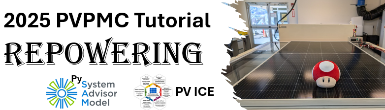

2025 PVPMC Repowering Tutorial#
Welcome! The goal of this tutorial is to introduce the concepts and modeling principles for evaluating lifecycle decisions such as repowering on aging PV Systems.
The tutorial is divided into various Problem Based journals. During PVPMC 2025, Journal 1 will be covered in its totality.
PBL 1: 15 min#
This section will introduce the evaluation of decommisioning, reinstalling, repowering with recycling or resell of a Commercial System. The working example will have you use SAM Jsons, assign weather data for different locations, go over setting and adjusting costs for all of this possilbe lifecylce choices.
PBL 2-4#
This problem based learning follows , where you will calculate either a) a pv module power output, or b) Comparison of weather data to clear-sky data by taking code from section 1, and adding new code from the documentation provided. This section will be in small teams created during the session based on skill level. Facilitator will roam around supporting. This is covered by tutorial PBL 1.
By the end of this tutorial, you should be able to:
Understand the basics of Python and how to run code using an online platform (e.g., Jupyter or Google Colab)
Load and execute sample code using PySAM for PV system modeling
Configure and load your own weather data — either locally or via the NSRDB API
Navigate Python code: copy, paste, edit, and most importantly, read the documentation :smiley:
Recognize key parameters relevant to lifecycle decisions in repowering scenarios (e.g., degradation, capacity gain, costs)
What you will need for the tutorial during the live session (May 15, 2025)#
During this tutorials, we hope you get to play with the code. A laptop is ideal, but we have had attendees follow through their phones or tablets, or joining in with a peer. You will NOT have to install anything on your computer if you don’t want, as we will be running the tutorial in Google Collab. However, you WILL need to be logged-in to a google account to run the tutorials online. Alternatively, you can install on your computer (instructions below).
Tutorial Setup#
These tutorials are made with Jupyter, which is a browser based interactive Python notebook that allows you to run the tutorials in the cloud without any additional setup. On the day of the tutorial, we will use Google Colaboratory.
Google Colaboratory#
To run these tutorials in Google Colaboratory you can click the button below:
You can also select Colaboratory from the launch icon at the top of each tutorial in the Jupyter book.
Installing Requirements#
When using Google Colaboratory, you must uncomment the first cell that installs the tutorial requirements.
!pip install -r https://raw.githubusercontent.com/PVSC-Tutorials/2025_PVPMC_PV_Repowering/main/requirements.txt
Jupyter Books#
The full tutorial is hosted as a Jupyter book. This book has navigation, search, and can be used to launch each book in Colaboratory.

My Binder#
The tutorials will remain available on GitHub, and you can run the tutorial anytime in Binder by clicking the following link:

Locally#
You can also run the tutorial locally with miniconda by following thes steps:
Install miniconda.
Clone the repository:
git clone https://github.com/PV-Tutorials/2025_PVPMC_PV_Repowering.git
Create the environment and install the requirements. The repository includes a
requirements.txtfile that contains a list the packages needed to run this tutorial. To install them using conda run:conda create -n pvsc2024 jupyter -c pvlib --file requirements.txt conda activate pvsc2024
Start a Jupyter session:
jupyter notebook
Use the file explorer in Jupyter lab to browse to
2025_PVPMC_PV_Repoweringand start the first Tutorial.
Licensing#

This work is licensed under a Creative Commons Attribution 4.0 International License.